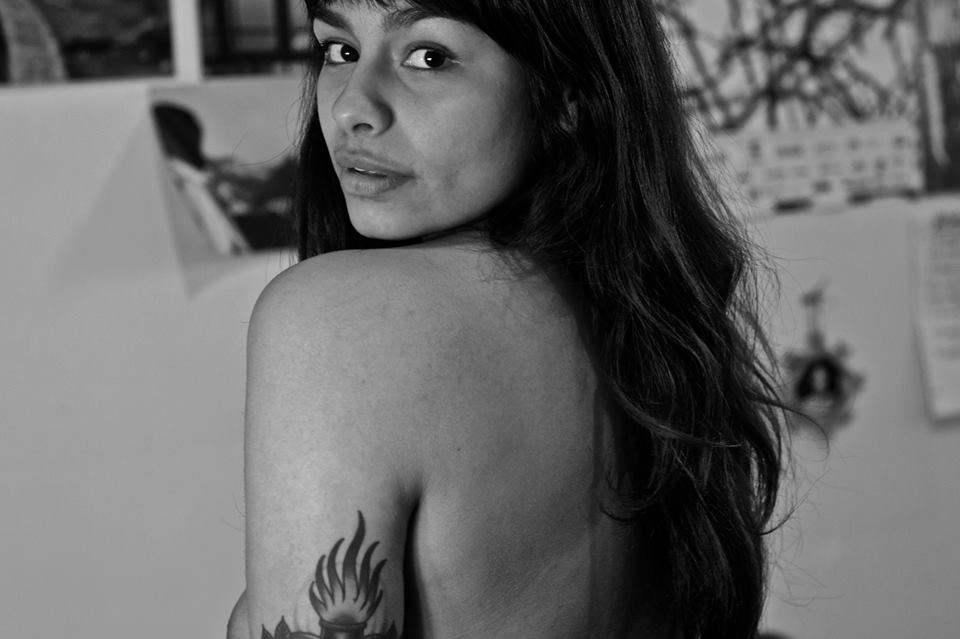
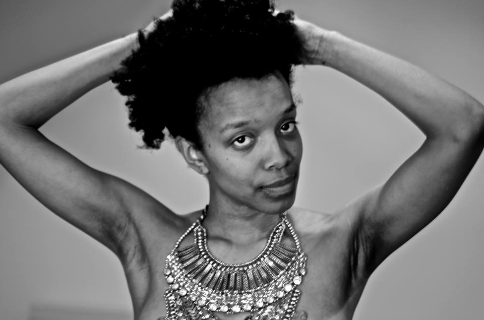

Fatimah Asghar's After / "Let Me Love Me"
From releasing her recent chapbook After, to touring the nation with her words, and her dedicated work with young poets and writers with Young Chicago Authors, Fatimah Asghar is one of the most prolific rising voices in the Chicago poetry scene and beyond. She can add photographer to the long list of creative endeavors. “Let Me Love Me” is Asghar’s brainchild stemmed through her activism and her work which deals largely with bodies, voices and the isms of society.
The project is an ongoing photo series surrounding the idea of brown bodies and how they are perceived, valued and loved, not only by the culture at large, but by the very people that inhabit those vessels. The project features men and women posed nude, bare, vulnerable, and open. Asghar interviews each person, shedding light on their insecurities, the things they love, or hate about themselves, and the metaphorical weights they carry. The result is an intimate and beautiful portrayal of people speaking their truths, whether it be painful and hard, or poignant and real, something which Asghar is no stranger to lending her voice to.
amfm: The photo project was born out of the recognition of the need for self love for your friends and people of color, especially with these trying times. Why was this something that you wanted to tackle or address and why do you think the photo project was the vessel to address those things? Why did you want to do this project?
fatimah asghar: I created the project in January 2015, in the context of a really hard and racially tumultuous time. My friends of color and I had spent a lot of time protesting police brutality and were failing to take care of ourselves, but were fighting really hard. All around were a lot of media stories debating and dissecting bodies of color. It’s hard, to see your image and only hear it talked about as a problem. I wanted to create a space of love for our bodies, where a wide range of people of color could carve out some time to reflect on the ways that they love themselves, their journeys with learning to love their bodies, and just sit in their own beauty.
amfm: What is the significance of calling it "Let Me Love Me?" Like loving oneself should be something allowed..
asghar: I don't think people of color are allowed to love ourselves openly in American society. There is so much telling us we are ugly, that our bodies are unworthy of love. If someone does radically love themselves, they are dismissed as vain or arrogant or as a hoe, or something else. So this is a fuck you to that. This is a I-don't-give-a-fuck-and-I'm-gonna-love-myself-anyway.
amfm: That Audre Lourde quote talks about the act of self love/self care being a radical act, do you believe that to be true?
asghar: I do. Our bodies are more than just what they can produce. Loving them and taking the time for self care is a radical act in a capitalist, racist, sexist, homophobic, transphobic world.
amfm: This is your first stab at a photography project. You are a spoken word artist and poet, was this project challenging for you? What was it like to see many of your friends naked, literally and figuratively?
asghar: It was challenging for me. I am a self-taught photographer. I'm just figuring it out. So sometimes the photos wouldn't come out like I wanted, or I felt like I couldn't capture someone's beauty in the way I wanted. But it wasn't hard for me to see people naked. I'm a poet; we are vulnerable all the time in front of each other. And I love bodies. I think they are beautiful.
amfm: What were some of the most insightful things you learned or took away in speaking with people about their feelings of beauty and vulnerability and doing that interview process? Is there a particular person or statement that stuck with you or stands out?
asghar: Everyone stands out. It’s just such a different space and rhythm from my daily life. It’s beautiful to just listen to people talk about themselves. Really what I took away is that insecurities are so silly. We all have them, we all fail to see how perfect we are, or can be. Flaws aren't a thing to hide from. I think something that was surprising was how many people offered to take photos of me too, even if they had never taken photos before. It's really beautiful.
amfm: You being a writer, you tell many truths, shedding of yourself. Someone described your work/process and openness as painful work. Especially this chapbook After you are releasing stemming from a place of pain. Do you believe it to be painful work? What is painful about the process of being open?
asghar: After is painful. It's painful because it’s about sexual assault. It’s about the violation of my body. The violation of anyone’s body is always painful, because it shouldn't happen. It’s not painful to be open. It's painful to remember.
amfm: Why are brown people beautiful to you?
asghar: Because we are. I love everything about us - all of our skin colors, all the ways we speak, all of our hair, our adornments, our eyes, our lips, our noses, the way we are all shaped. Everyone is so unique and gorgeous and there are so many of us! So many beautiful people who have been written out of that word. I don't understand why a cannon of beauty was ever created. It’s so false. There isn't one way to be beautiful. There are so many.Let Me Love Me Series:
|  |
|  |
Here is a snippet from the interview with Fatimah Asghar about the "Let Me Love Me" photo series. Stay tuned for a full video interview with SeeThruVision soon!
For more from Fatimah Asghar:
Fatimah Asghar's Website
"Let Me Love Me" on Facebook